一般クエスト Lv100～199
| 9周年記念フランデル大陸スタンプラリー | |
|---|---|
|
レッドストーン9周年記念フランデル大陸スタンプラリーイベント。毎日それぞれの都市にいる5人のスタンプ管理人から参加スタンプ帳に参加スタンプを押してもらおう。1日で5人全員から参加スタンプを押してもらうと「1日分」になります。参加スタンプを集めた日数に応じて、様々なお祝いアイテムをもうらことができます。お祝いアイテムは、古都ブルンネンシュティグのイベントガイドから受け取りましょう。 参加スタンプイベント終了後は、お祝いアイテムを受け取ることができません。クエスト情報は、イベント期間終了後に、関連NPCに話しかけることで回収されます。 |
|
| 受諾場所 | 古都ブルンネンシュティグ イベントガイド(81.124) |
| 受諾条件 | Lv100 期間限定 キャンセル不可 9周年記念 フランデル大陸スタンプラリー |
| 報酬 | 1日目 くじ引き花火5個 3日目 ギアカーペットツール簡易版 6日目 風の羽 9日目 9周年記念Box1個 12日目 9周年記念Box2個 14日目 9周年記念Box3個 |
| 鉱山町ハノブ | イベント期間中はキャンセル不可。 イベント終了後にイベントガイドに話すとキャンセルできる。 鍛冶屋バルト(113.7)へ |
| 港街ブリッジヘッド | 船員ヴィラン(97.139)へ |
| 魔法都市スマグ | 魔法師エラリオン(91.8)へ |
| オアシス都市アリアン | 貿易商チャバド(60.26)へ |
| 神聖都市アウグスタ | 神父オルヘイム(90.49)へ |
| 古都ブルンネンシュティグ | イベントガイドへ 14日分のスタンプを集めるとスタンプ帳が100％になり、1～14日目全ての褒賞アイテムを受け取ることができる。 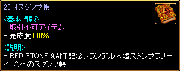 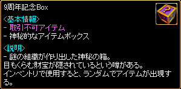 9周年記念Boxから出現するアイテム一覧 異次元ボックス[取引不可] [運Lv9] ホワイトナイン [運Lv9] キャットオーナインテール 金色の再構成魔法書[取引不可] 青色の再構成魔法書[取引不可] 金のエンチャント文書[取引不可] 超強力魔力解除キット[取引不可] 魔力解除キット[取引不可] 魔法のボンド[取引不可] 風の羽3個 ソラの特製育成剤[プラチナ][取引不可] 改良型フルチャージポーション9個 改良型フルヒールポーション9個 万病治療薬9個 キャンディー花火5個 |
| 10周年の贈り物イベント |
|||||||
|---|---|---|---|---|---|---|---|
1日1回、古都ブルンネンシュティグのマサットに話しかけて贈り物をもらおう。 |
|||||||
| 受諾場所 | 古都ブルンネンシュティグ マサット(84.121) | ||||||
| 受諾条件 | Lv100 期間限定 キャンセル不可 10周年の贈り物イベント |
||||||
| 報酬 |
|
||||||
| 古都ブルンネンシュティグ | 必要なクエスト欄の空き2個 イベント中はキャンセル不可。 20個全ての贈り物を受け取った後、またはイベント期間終了後にマサットに話すとキャンセルできる。 1日1回、マサットへ
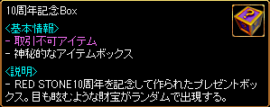 10周年記念Boxから出現するアイテム一覧 レッドネックレス 上級魔力抽出機DX[取引不可] 神秘鏡のかけら[取引不可] 神秘のふいご[S] 冷たい風のふいご[S] 熱い風のふいご[S] 金色の魔力増幅魔法書[取引不可] 金色の再構成魔法書[取引不可] 青色の魔力増幅魔法書[取引不可] 青色の再構成魔法書[取引不可] 炎の石 ランダムゴールド袋[1000万～1億] 天上の鉄床 ポータル福券 |
||||||


| 船員募集 | |
|---|---|
小都市ビッグアイで、ブラックスワン号に乗る船員 5人を捜してみよう。 小都市ビッグアイで、ブラックスワン号に乗る船員 4人をもっと捜してみよう。 小都市ビッグアイで、ブラックスワン号に乗る船員 3人をもっと頑張って捜してみよう。 小都市ビッグアイで、ブラックスワン号に乗る船員 2人をもっともっと捜してみよう。 小都市ビッグアイで、ブラックスワン号に乗る船員 1人をもっと、じっくり捜してみよう。 ブラックスワン号に乗る船員5人をすべて集めた。ジャックスピンに乗船希望者名簿を渡そう。 |
|
| 受諾場所 | 港街シュトラセラト ジャックスピン(5.139) |
| 受諾条件 | Lv100 |
| 報酬 | 経験値10万 |
| 小都市ビッグアイ | 船員5人(83.65)→(3.82)→(4.7)→(26.23)→(56.36)へ |
| 港街シュトラセラト | ジャックスピンへ |
| 真実を見る目 | |
|---|---|
逮捕しなければならない人物の名前はハイドンだが、正確な情報把握のためには荒廃都市ダメルの人々に会い、捜査をしなければならない。 ハイドンの行方が分かった。荒廃都市ダメルの古代地下遺跡にいる。そこへ行って、ハイドンを見つけよう。 犯罪者の話は聞く必要はない。彼に国王の力と法の尊厳をじっくりと教えてあげよう。 プロドの指輪をもらった。この指輪を新興王国ビガプール広場にいる治安監督官のアレスト監督官に渡そう。 |
|
| 受諾場所 | 新興王国ビガプール アレスト(92.125) |
| 受諾条件 | Lv100 カリスマ30 |
| 報酬 | [選択肢1] 経験値10万 [選択肢2] 経験値30万 10万G |
| 荒廃都市ダメル | ライン(45.31)へ |
| ダメル地下遺跡 | ハイドン(193.77)へ [選択肢1]話なんか知らないよ。犯罪者の言うことなんか信用できるもんかっ。 → 経験値10万 [選択肢2]事情があったって？まあそれじゃ、話を聞いてみようか。 → 経験値30万 10万G |
| 新興王国ビガプール | アレストへ |
| 宮廷料理人カープ | |
|---|---|
キャンサー気孔Ｂ６に住んでいるキングクラブを狩りカニの肉を集めよう。メロウを狩って、薬味の材料になるメロウのしっぽを集めよう。 ぶどう汁を集めるために神聖都市アウグスタに住んでいるミューラー神父に会おう。 料理のために必要な材料は皆そろえた。新興王国ビガプールの宮廷料理人カープのもとに戻ろう。そして途中で、今回の任務をやめたくなる時でも、シャトゥ・ブレリュは必ずカープに渡そう。シャトゥ・ブレリュを失くした場合は、神聖都市アウグスタに住んでいるミューラー神父にまた頼もう。 食材料をもらった。港街シュトラセラトの酒場、ブルースビストロにいる料理人トーイに会おう。 料理が始まった。ちょっと待ってからトーイに声を掛けよう。 トーイから宮廷料理が入ったケースをもらった。新興王国ビガプールにいる宮廷料理人カープのもとに戻ろう。 |
|
| 受諾場所 | 新興王国ビガプール カープ(97.86) |
| 受諾条件 | Lv100 |
| 報酬 | [選択肢1] 経験値15万 [選択肢2] 経験値35万 |
| キャンサー気孔 Ｂ６ | 連作クエスト 宮廷料理人カープ → 宮廷料理の材料集め キングクラブ(Lv110)とメロウ(Lv110)を倒す |
| 神聖都市アウグスタ | ミューラー神父(92.125)へ |
| 新興王国ビガプール | カープへ [選択肢1]申し訳ないです。もう充分にお手伝いしたと思います。 → 終了 (経験値15万) [選択肢2]はい、わかりました。 → クエスト継続 (経験値20万) |
| ブルースビストロ | [選択肢2]はい、わかりました。 を選択した場合の続き トーイ(16.8)へ |
| 新興王国ビガプール | カープへ (経験値15万) |
| 宮廷料理の材料集め | |
|---|---|
カープが宮廷料理の材料を集めてくれるよう頼んでいる。話をもっと聞いてみた後に、どういう材料を集めればいいか決めよう。 キャンサー気孔B6に住んでいるキングクラブを狩り、カニミソを手に入れよう。 ソゴム山脈 赤山登山路に住んでいるサラマンダーを狩り、炎のヒレを手に入れよう。 やぶ森の中に住んでいるエルフ戦士を狩り、エルフの涙を集めよう。 ヘムクロス高原/アラク湖付近に住んでいるブラウンベアーを狩り、熊の肉を手に入れよう。 料理に必要な材料を手に入れた。カープの所に戻ろう。 |
|
| 受諾場所 | 新興王国ビガプール カープ(97.86) |
| 受諾条件 | Lv100 繰り返し可 |
| 報酬 | 経験値15万 |
| 新興王国ビガプール | 連作クエスト 宮廷料理人カープ → 宮廷料理の材料集め カープへ [選択肢]カニミソ 10個 → キャンサー気孔 Ｂ６ キングクラブ(Lv110) [選択肢]炎のヒレ 7個 → ソゴム山脈 赤山登山路 サラマンダー(Lv120) [選択肢]エルフの涙 10個 → やぶ森の中 エルフ戦士(Lv115) [選択肢]熊の肉 10個 → ヘムクロス高原 / アラク湖付近 ブラウンベアー(Lv117) |
| キャンサー気孔 Ｂ６ | キングクラブ(Lv110)を倒す |
| ソゴム山脈 赤山登山路 | サラマンダー(Lv120)を倒す |
| やぶ森の中 | エルフ戦士(Lv115)を倒す |
| ヘムクロス高原 / アラク湖付近 | ブラウンベアー(Lv117)を倒す |
| 新興王国ビガプール | カープへ |
| 失われた宝物 | |
|---|---|
地下道の中にいるカスターに奪われたフォームガードと鳳凰章の模造品を取り戻そう。 取り戻した模造品をカトナに渡そう。 地下道の中にいるカスターに奪われたフォームガードの模造品を取り戻そう。 取り戻した模造品をカトナに渡そう。 |
|
| 受諾場所 | タワー洞窟地下道 １Ｆ カトナ(48.58) |
| 受諾条件 | Lv100 |
| 報酬 | [選択肢] 経験値130万 100万G [選択肢] 経験値120万 110万G |
| タワー洞窟地下道 １Ｆ | カスター(Lv110)を倒す カトナへ カスター(Lv110)を倒す カトナへ (経験値120万 100万G) [選択肢]はい。では、良い旅行になるように。 → 経験値10万 [選択肢]いいえ、少なすぎます！ → 10万G |
| ハイランダーの頼みごと | |
|---|---|
ハイランダーから悪魔へと変わり果ててしまったヘルナイトを見つけ出して倒そう。 ハイランダーから悪魔へと変わり果ててしまったヘルナイトを、倒した証拠を獲得した。ファウンティンス・ハイランドの泉穴で待っているハイランダーの所に戻ろう。 悪魔に騙されたハイランダーの契約書を取り戻そう。しかしその契約書を取り戻す方法は分からないという。 ‘ヘルシャウトの契約書’をヘルシャウトからもらった。ファウンティンス・ハイランドの泉穴で待っているハイランダーの所へ戻ろう。ヘルシャウトは、絶対に‘ヘルシャウトの契約書’を開いて中を見てはいけない、ハイランダーに見せなさいと言った。また、強力なハイランダーの力をもたらすほど、大きな褒美をあげると言った。これから推測するに、‘ヘルシャウトの契約書’はハイランダーの命を奪うために作られたようだ。 |
|
| 受諾場所 | 泉の水の穴 ハイランダー(93.11) |
| 受諾条件 | Lv100 |
| 報酬 | [選択肢] - [選択肢] 経験値120万 メタルスケルアーマーDX |
| 泉の水の穴 | 連作クエスト ハイランダーの頼みごと → ヘルシャウトの頼みごと 鉱山町ハノブ←↑↑↑   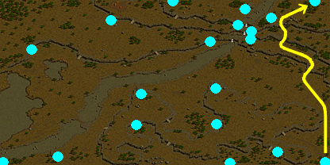 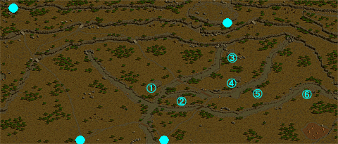 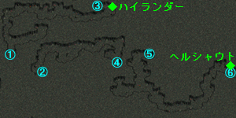 |
| ファウンティンス・ハイランド | ヘルナイト(Lv100)を倒す |
| 泉の水の穴 | ハイランダーへ ヘルシャウト(197.120)へ、ヘルシャウトの頼みごとを受諾 ハイランダーへ [選択肢]渡す → ヘルシャウトの頼みごと [選択肢]しかしこれは偽造品です。 → 終了 (経験値120万 メタルスケルアーマーDX) |
| ヘルシャウトの頼みごと | |
|---|---|
ヘルシャウトの契約書を狙うハイランダーにヘルシャウトの契約書を渡そう。 ヘルシャウトの所へ戻って報酬をもらおう。 |
|
| 受諾場所 | 泉の水の穴 ヘルシャウト(197.120) |
| 受諾条件 | Lv100 |
| 報酬 | 経験値120万 防御力効率Lv6(60％)チェーンベルトGDX |
| 泉の水の穴 | 連作クエスト ハイランダーの頼みごと → ヘルシャウトの頼みごと ハイランダー(93.11)へ ヘルシャウトへ [選択肢]私はお金が欲しい！ [選択肢]私は全世界最高の強者になりたい！ [選択肢]私に名誉を！ 選択肢はどれでも可。 一定の条件を満たしていないと報酬なし。条件はカリスマ250以上である可能性が高い。 確実に経験値がほしい場合はハイランダーの頼みごとで[選択肢]しかしこれは偽造品です。 を選択すること。 |
| 倉庫襲撃事件 | |
|---|---|
|
不思議なワイン瓶を手に入れた。ワイン瓶がこんな所に転がっているのは少し変っていることに間違いない。アウグスタのクレミと書いてある。 クレミはあなたがワイン瓶を手に入れた経緯を聞くと、ベスティンと言う倉庫番を探してみることを勧めた。彼はソルティケーブ地上1階のどこかにいるはずだ。 ソルティケーブの岩塩は洞窟の原始人が殆どを持っている。岩塩には異常状態の治療にも使われているらしい…ベスティンに塩を食べさせてみよう。 地下1階から3階に棲息するケーブ族たちが、ワイン瓶を強奪して行った。彼らをこらしめて十分な量のワインを集めてこよう。 ワインを集めた。これならば十分だろう。クレミの所へ戻ろう。 |
|
| 受諾場所 | ソルティケーブ Ｂ１～３ |
| 受諾条件 | Lv100 |
| 報酬 | 経験値120万 |
| ソルティケーブ Ｂ１～３ |
ケーブ族(Lv154～180)を倒すと、空きワイン瓶がドロップしてクエスト受諾 |
| 神聖都市アウグスタ | クレミ(166.117)へ |
| ソルティケーブ １Ｆ | 岩塩15個以上を持って、ベスティン(141.133)へ |
| ソルティケーブ Ｂ１～３ |
ケーブ族リーダー(Lv160～170)を倒す |
| 神聖都市アウグスタ | クレミへ |
| 帰還兵の苦悩 | |
|---|---|
ビガプールのブルボン公爵にデイモンの書類を渡すようにしよう。 ビガプールのアリストイ公爵を訪ねて、デイモンの書類を渡そう。 ビガプールのミルベル公爵に、デイモンの書類を渡そう。 ビガプールのパトリキー公爵に、デイモンの書類を渡そう。 デイモンに書類審査に合格した事を知らせよう。 |
|
| 受諾場所 | 港街シュトラセラト デイモン(70.14) |
| 受諾条件 | Lv110 |
| 報酬 | 経験値10万 |
| 新興王国ビガプール | ブルボン公爵(123.159)へ アリストイ公爵(140.85)へ ミルベル公爵(10.37)へ パトリキー公爵(76.124)へ |
| 港街シュトラセラト | デイモンへ |
| ゴールド・ラッシュ | |
|---|---|
バリアートの町人から黄金が出るという沼地洞窟に関する情報を集めよう。 分かった事実をヘスポスに報告し、彼が指名した人を探してみよう。 リンケン付近の砂漠地域何処かで販売するチャドルを手に入れてミツの注意を引いて黄金採取の秘法を聞き出そう。 町の東側にあるゴールド・スワンプ洞窟から網を使って金をすくい出そう。 バリアートのヘスポスの所へ戻って状況を説明しよう。 ゴールド・スワンプ洞窟で会ったラリ・フォンに網を渡して手数料をもらおう。 |
|
| 受諾場所 | バリアート酒場 ヘスポス(15.7) |
| 受諾条件 | Lv110 |
| 報酬 | 経験値150万 120万G |
| 大きな町 バリアート | 連作クエスト ゴールド・ラッシュ → 魔法の網 以下の順番で町人10人へ ちびっこ(59.75) 一番大きい子供 ちびっこ(7.101) 老人(19.23) 老人(85.26) 農民(22.121) 農民(88.135) 農民(45.140) 農民(104.102) 青年(123.32) 婦人(107.142) |
| バリアート酒場 | ヘスポスへ |
| 魔法都市スマグ | メルン(7.58)へ |
| ウィザードの研究室 | ミツ(22.66)へ、チャドルを渡して魔法の網を受諾 チャドルはセスナの道のアル・モハド(77.30)から3万Gで購入できる。 クエスト欄に空きがないとチャドルを無駄に消費する。 |
| バリアート酒場 | 魔法の網をクリア後、クエスト欄には表示されないがヘスポスへ |
| ゴールド・スワンプ洞窟 Ｂ１ | ラリ・フォン(53.7)へ |
| バリアート酒場 | ヘスポスへ |
| ゴールド・スワンプ洞窟 Ｂ１ | ラリ・フォンへ |
| 魔法の網 | |
|---|---|
|
リンケンとブルンネンシュティグの間の大きな森‘グレートフォレスト’の南方面にある‘妖精達の蜘蛛の糸’森の中央にある狩人の倉庫に行って40万ゴールドを置いて蜘蛛の糸を持って行こう。 獲得した蜘蛛の糸をスマグのミツに届けよう。 バリアートへ行って小麦のわら束をもらってこよう。 獲得したわら束をスマグのミツに届けよう。 ウィザードギルドに助けてもらい、スマグ地下路へ行ってレッドアイ護衛兵が持っている光のランプを手に入れよう。 手に入れた光のランプをスマグのミツに渡して魔法の網をもらおう。 |
|
| 受諾場所 | ウィザードの研究室 ミツ(22.66) |
| 受諾条件 | Lv110 キャンセル不可 繰り返し可 |
| 報酬 | 経験値75万 |
| 地下倉庫 | 連作クエスト ゴールド・ラッシュ → 魔法の網 鷲剣士(Lv570)のタゲを取る グレートフォレスト/ 妖精達の蜘蛛の糸の猟師の休憩室から地下倉庫へ。 クエスト更新時に40万Gを消費。ゴールドを所持していないとクエスト更新されない。 |
| ウィザードの研究室 | ミツへ |
| 大きな町 バリアート | 管理人(120.84)へ |
| ウィザードの研究室 | ミツへ |
| スマグ地下道 Ｂ３ | レッドアイ護衛兵(Lv130)を倒す 行き方の詳細は ⇒ スマグ地下道へのワープ方法 光のランプは非常にドロップ率が低いが、Lv600以上になるとドロップ率100％になる。 |
| ウィザードの研究室 | ミツへ |
| ランバートの頼みごと | |
|---|---|
ブラウンベアーの皮を集める。皮への損傷は最小限に留める事。ブラウンベアーはトワイライト滝の奥深い地下6階で冬眠の準備をしている。 良質な毛皮を集めたので、ランバートの所へ戻ろう。 |
|
| 受諾場所 | 港街ブリッジヘッド ランバート(64.83) |
| 受諾条件 | Lv140～180 繰り返し可 |
| 報酬 | 経験値30万 |
| トワイライト滝 Ｂ６ | ブラウンベアー(Lv160)を倒す |
| 港街ブリッジヘッド | ランバートへ |
| 懸賞付き指名手配 - 虐殺者ナッシュ | ||||||||||||||||||||||||||||||||||||||||
|---|---|---|---|---|---|---|---|---|---|---|---|---|---|---|---|---|---|---|---|---|---|---|---|---|---|---|---|---|---|---|---|---|---|---|---|---|---|---|---|---|
冒険家協会により懸賞付き指名手配となったモンスター 虐殺者ナッシュの討伐依頼があった。主な出没地は魔法傭兵の墓。虐殺者ナッシュを討伐し、冒険家協会に戻ろう。 冒険家協会によって懸賞付き指名手配となったモンスター 虐殺者ナッシュ の討伐を完了した。冒険家協会ブルンネンシュティグ本部の協会任務担当官に報告しよう。 |
||||||||||||||||||||||||||||||||||||||||
| 懸賞付き指名手配 - 鋼鉄のキメラ | ||||||||||||||||||||||||||||||||||||||||
冒険家協会により懸賞付き指名手配となったモンスター 鋼鉄のキメラの討伐依頼があった。主な出没地は名も無い崩れた塔 1F。鋼鉄のキメラを討伐し、冒険家協会に戻ろう。 冒険家協会により懸賞付き指名手配となったモンスター 鋼鉄のキメラ の討伐を完了した。冒険家協会ブルンネンシュティグ本部の協会任務担当官に報告しよう。 |
||||||||||||||||||||||||||||||||||||||||
| 懸賞付き指名手配 - 左足のダディー | ||||||||||||||||||||||||||||||||||||||||
冒険家協会により懸賞付き指名手配となったモンスター 左足のダディーの討伐依頼があった。主な出没地は小さい傭兵墓 B1。左足のダディーを討伐し、冒険家協会に戻ろう。 冒険家協会により懸賞付き指名手配となったモンスター 左足のダディー の討伐を完了した。冒険家協会ブルンネンシュティグ本部の協会任務担当官に報告しよう。 |
||||||||||||||||||||||||||||||||||||||||
| 懸賞付き指名手配 - 暴走ゴレーム | ||||||||||||||||||||||||||||||||||||||||
冒険家協会により懸賞付き指名手配となったモンスター 暴走ゴレームの討伐依頼があった。主な出没地はスウェブタワー 11F。暴走ゴレームを討伐し、冒険家協会に戻ろう。 冒険家協会により懸賞付き指名手配となったモンスター 暴走ゴレーム の討伐を完了した。冒険家協会ブルンネンシュティグ本部の協会任務担当官に報告しよう。 |
||||||||||||||||||||||||||||||||||||||||
| 懸賞付き指名手配 - 流血のファイク | ||||||||||||||||||||||||||||||||||||||||
冒険家協会により懸賞付き指名手配となったモンスター 流血のファイクの討伐依頼があった。主な出没地はフォーリン望楼地下。流血のファイクを討伐し、冒険家協会に戻ろう。 冒険家協会により懸賞付き指名手配となったモンスター 流血のファイク の討伐を完了した。冒険家協会ブルンネンシュティグ本部の協会任務担当官に報告しよう。 |
||||||||||||||||||||||||||||||||||||||||
| 懸賞付き指名手配 - 捕食者ラフォン | ||||||||||||||||||||||||||||||||||||||||
冒険家協会により懸賞付き指名手配となったモンスター 捕食者ラフォンの討伐依頼があった。主な出没地は暴かれた納骨堂 B6。捕食者ラフォンを討伐し、冒険家協会に戻ろう。 冒険家協会によって懸賞付き指名手配となったモンスター 捕食者ラフォン の討伐を完了した。冒険家協会ブルンネンシュティグ本部の協会任務担当官に報告しよう。 |
||||||||||||||||||||||||||||||||||||||||
| 懸賞付き指名手配 - 暗殺者エルオーン | ||||||||||||||||||||||||||||||||||||||||
冒険家協会により懸賞付き指名手配となったモンスター 暗殺者エルオーンの討伐依頼があった。主な出没地はダークエルフ王宮 2F。暗殺者エルオーンを討伐し、冒険家協会に戻ろう。 冒険家協会により懸賞付き指名手配となったモンスター 暗殺者エルオーン の討伐を完了した。冒険家協会ブルンネンシュティグ本部の協会任務担当官に報告しよう。 |
||||||||||||||||||||||||||||||||||||||||
| 懸賞付き指名手配 - 大盗賊フランク | ||||||||||||||||||||||||||||||||||||||||
冒険家協会により懸賞付き指名手配となったモンスター 大盗賊フランクの討伐依頼があった。主な出没地は呪いを受けたミズナの洞窟 / 宝玉の部屋。大盗賊フランクを討伐し、冒険家協会に戻ろう。 冒険家協会により懸賞付き指名手配となったモンスター 大盗賊フランク の討伐を完了した。冒険家協会ブルンネンシュティグ本部の協会任務担当官に報告しよう。 |
||||||||||||||||||||||||||||||||||||||||
| 懸賞付き指名手配 - 守護者フォリー | ||||||||||||||||||||||||||||||||||||||||
冒険家協会により懸賞付き指名手配となったモンスター 守護者フォリーの討伐依頼があった。主な出没地は名も無い遺跡 B1。守護者フォリーを討伐し、冒険家協会に戻ろう。 冒険家協会により懸賞付き指名手配となったモンスター 守護者フォリー の討伐を完了した。冒険家協会ブルンネンシュティグ本部の協会任務担当官に報告しよう。 |
||||||||||||||||||||||||||||||||||||||||
| 懸賞付き指名手配 - 猿王バット | ||||||||||||||||||||||||||||||||||||||||
冒険家協会により懸賞付き指名手配となったモンスター 猿王バットの討伐依頼があった。主な出没地はガルカス悪魔軍集結地 B1。猿王バットを討伐し、冒険家協会に戻ろう。 冒険家協会により懸賞付き指名手配となったモンスター 猿王バット の討伐を完了した。冒険家協会ブルンネンシュティグ本部の協会任務担当官に報告しよう。 |
||||||||||||||||||||||||||||||||||||||||
| 懸賞付き指名手配 - 永劫のファントム | ||||||||||||||||||||||||||||||||||||||||
冒険家協会により懸賞付き指名手配となったモンスター 永劫のファントムの討伐依頼があった。主な出没地は時の森。永劫のファントムを討伐し、冒険家協会に戻ろう。 冒険家協会により懸賞付き指名手配となったモンスター 永劫のファントム の討伐を完了した。冒険家協会ブルンネンシュティグ本部の協会任務担当官に報告しよう。 |
||||||||||||||||||||||||||||||||||||||||
| 懸賞付き指名手配 - 闇魔導師ラオール | ||||||||||||||||||||||||||||||||||||||||
冒険家協会により懸賞付き指名手配となったモンスター 闇魔導師ラオールの討伐依頼があった。主な出没地は神秘の洞窟。闇魔導師ラオールを討伐し、冒険家協会に戻ろう。 冒険家協会により懸賞付き指名手配となったモンスター 闇魔導師ラオール の討伐を完了した。冒険家協会ブルンネンシュティグ本部の協会任務担当官に報告しよう。 |
||||||||||||||||||||||||||||||||||||||||
| 受諾場所 | 冒険家協会ブルンネンシュティグ本部 協会任務担当官(22.34) | |||||||||||||||||||||||||||||||||||||||
| 受諾条件 | Lv150 1日1回繰り返し可 | |||||||||||||||||||||||||||||||||||||||
| 報酬 |
|
|||||||||||||||||||||||||||||||||||||||
| 冒険家協会ブルンネンシュティグ本部 | 協会任務担当官より各マップの出現場所へワープできる 各Lvの対象モンスターを倒す パーティーメンバー(クエスト遂行者でなくても可)が倒すと、同一マップ内のメンバー全員が更新される。
協会任務担当官へ 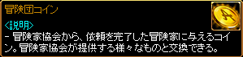 |
|||||||||||||||||||||||||||||||||||||||
| 神秘な力の宝石 | |
|---|---|
ハンヒ山脈 / ドレム川付近の河口ダンジョン‘ド’から、モンスターの種類ごとに1個ずつ、神秘な力が込められた宝石を見つけ出してスマグのカリン・デイスの所へ持って行こう。 ハンヒ山脈 / ドレム川付近の河口ダンジョン‘レ’から、モンスターの種類ごとに1個ずつ、神秘な力が込められた宝石を見つけ出してスマグのカリン・デイスの所へ持って行こう。 ハンヒ山脈 / ドレム川付近の河口ダンジョン‘ミ’から、モンスターの種類ごとに1個ずつ、神秘な力が込められた宝石を見つけ出してスマグのカリン・デイスの所へ持って行こう。 ハンヒ山脈 / ドレム川付近の河口ダンジョン‘ラ’から、モンスターの種類ごとに1個ずつ、神秘な力が込められた宝石を見つけ出してスマグのスマグのカリン・デイスの所へ持って行こう。 スマグのカリン・デイスが言った全ての宝石を集めた。戻ってカリンに宝石を渡そう。 |
|
| 受諾場所 | 魔法都市スマグ カリン・デイス(10.33) |
| 受諾条件 | Lv150 |
| 報酬 | 経験値340万 男性職 防御力効率Lv4コート 女性職 防御力効率Lv4ボーンイアリング |
| 河口ダンジョン 'ド' Ｂ１～３ | プレーガー(Lv175)とファントム(Lv175)を倒す |
| 魔法都市スマグ | カリン・デイスへ |
| 河口ダンジョン 'レ' Ｂ１～２ | リザードキリング(Lv180)とリザードトルーパ(Lv170)を倒す |
| 魔法都市スマグ | カリン・デイスへ |
| 河口ダンジョン 'ミ' Ｂ１ | アクアスライム(Lv185)とクローラー(Lv185)を倒す |
| 魔法都市スマグ | カリン・デイスへ |
| 河口ダンジョン 'ラ' Ｂ１～２ | メロウ(Lv200)とキャストアイ(Lv195)Zinを倒す |
| 魔法都市スマグ | カリン・デイスへ |
| 足りない鉄 | |||||||||||||||||||||||||||||||||||||||||||||||||||||||||||||||||||||||||
|---|---|---|---|---|---|---|---|---|---|---|---|---|---|---|---|---|---|---|---|---|---|---|---|---|---|---|---|---|---|---|---|---|---|---|---|---|---|---|---|---|---|---|---|---|---|---|---|---|---|---|---|---|---|---|---|---|---|---|---|---|---|---|---|---|---|---|---|---|---|---|---|---|---|
鉱山町ハノブのビルリトを訪ねて、ハノブ山鉄鉱石をもらって来よう。 古都ブルンネンシュティグのオーベルを訪ねて、ハノブ山鉄鉱石を製錬しよう。 鉄が製錬されるまで時間が少しかかると言う。しばらくしたら、オーベルにまた声を掛けるようにしよう。 シュトラセラトのピンディに製錬された鉄を渡そう。 |
|||||||||||||||||||||||||||||||||||||||||||||||||||||||||||||||||||||||||
| 受諾場所 | 港街シュトラセラト ピンディ(30.143) | ||||||||||||||||||||||||||||||||||||||||||||||||||||||||||||||||||||||||
| 受諾条件 | Lv150 | ||||||||||||||||||||||||||||||||||||||||||||||||||||||||||||||||||||||||
| 報酬 | 経験値3万 オプション付加武器 | ||||||||||||||||||||||||||||||||||||||||||||||||||||||||||||||||||||||||
| 鉱山町ハノブ | ビルリト(41.55)へ | ||||||||||||||||||||||||||||||||||||||||||||||||||||||||||||||||||||||||
| 古都ブルンネンシュティグ | オーベル(186.168)へ オーベルへ |
||||||||||||||||||||||||||||||||||||||||||||||||||||||||||||||||||||||||
| 港街シュトラセラト | ピンディへ、ここで話した時の職業の武器を貰える
|
||||||||||||||||||||||||||||||||||||||||||||||||||||||||||||||||||||||||
| 古代王国の農業法 | |
|---|---|
シュトラセラトの骨董品商人に、正体不明の本を鑑定してもらおう。 荒廃都市ダメルのステンリーに、古代王国の農業法を伝えよう。 オアシス都市アリアンの市長アルマに、古代王国の農業法を伝えよう。 |
|
| 受諾場所 | 荒廃都市ダメル ステンリー(22.26) |
| 受諾条件 | Lv170 |
| 報酬 | 経験値10万 |
| 港街シュトラセラト | 骨董品商人(144.21)へ |
| 荒廃都市ダメル | ステンリーへ |
| オアシス都市アリアン | アルマ(126.23)へ |
| 母をたずねて | |
|---|---|
デフヒルズのモンスターたちを狩って、カイネンのお母さんの足跡を探してみよう。 古くさい救急箱を見付けた。この品物の持ち主と思われる、シュトラセラトの治療師を訪ねてみよう。 ビガプールのブルボン公爵を訪ねてみよう。 お母さんの遺書をカイネンに渡そう。 |
|
| 受諾場所 | 荒廃都市ダメル カイネン(46.37) |
| 受諾条件 | Lv175 |
| 報酬 | 経験値30万 |
| デフヒルズ | モンスターを倒す、どれでも可 |
| 港街シュトラセラト | 治療師(87.45)へ |
| 新興王国ビガプール | ブルボン公爵(123.159)へ |
| 荒廃都市ダメル | カイネンへ |
| パブル鉱山の召喚儀式 | |
|---|---|
現場監督がいる場所の北側でデルロスを見つけて助けを求めよう。 デルロスの北西にいる‘デビルガード’を捜して倒し、デルロス の所へ戻ろう。 デルロスの元へ戻って次の目標を聞いた後、捜して倒そう。 デルロスの元へ戻って次の目標を聞いた後、捜して倒そう。 デルロスの元へ戻って話し合おう。 ジェリアドのもとに戻って話をしてみよう。 |
|
| 受諾場所 | パブル鉱山 Ｂ１ 現場監督(174.141) |
| 受諾条件 | Lv180 |
| 報酬 | 経験値530万 |
| パブル鉱山 Ｂ１ | 連作クエスト パブル鉱山の召喚儀式 → バフォメットとの決戦 デルロス(151.85)へ デビルガード(Lv180)を倒す イビルガード(Lv190)を倒す リザードガード(Lv185)を倒す 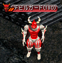 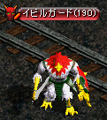 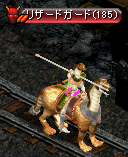 パーティーを組んでデルロスへ、右上エリアへワープ パーティーメンバー全員が同マップ内のデルロス付近に集まっていない、黒落ちがいる、他パーティーがクエスト中の場合はワープできない。 バフォメット(Lv195)のタゲを取るとバフォメットとの決戦を受諾 ジェリアド(11.309)へ |
| バフォメットとの決戦 | |
|---|---|
パブル鉱山地下1階でバフォメットと会った。バフォメットを退けよう。 ジェリアドのもとに戻って話をしてみよう。 |
|
| 受諾場所 | パブル鉱山 Ｂ１ |
| 受諾条件 | Lv180 |
| 報酬 | 経験値500万 |
| パブル鉱山 Ｂ１ | 連作クエスト パブル鉱山の召喚儀式 → バフォメットとの決戦 バフォメット(Lv195)のタゲを取るとクエスト受諾。 デビルガード(Lv180)、イビルガード(Lv190)、リザードガード(Lv185)が湧く。 バフォメット(Lv195)を倒す、外へワープ クエスト遂行者全員が各々バフォメットのタゲを取ってクエスト受諾してから倒すこと。 パーティーメンバーが倒すと全員クエスト更新される。 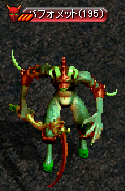 ジェリアド(11.309)へ バフォメットを倒すと稀に通称バフォ手、バフォ笛、バフォ指を獲得できる。 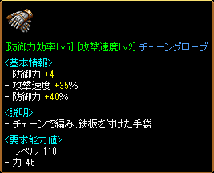 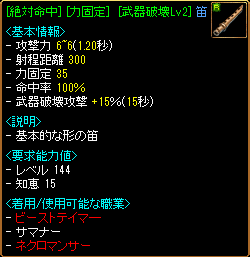 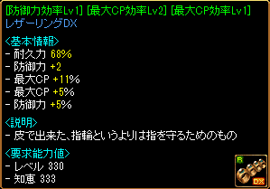 |
| フェアリーズビーベル | |||||||
|---|---|---|---|---|---|---|---|
|
自称冒険家で考古学者で伝説のコレクターで発明家だというヴィンスは、現在、泉や岩や木などの妖精に関する研究をしているそうだ。彼らの存在を証明する手がかりをデフヒルズにいる殺人蚊の群れとデビルスカラーから手に入れなければならないと言う。デフヒルズの殺人蚊の群れから殺人蚊の羽 30枚とデビルスカラーからデビルスカラーの手帳 10冊を手に入れよう。 蚊の羽とデビルスカラーの手帳を必要なだけ手に入れた。グレートフォレスト/ 妖精達の蜘蛛の糸にいるヴィンスのところに持って行こう。 ヴィンスは、デビルスカラーの手帳からグレートマウンテン北部にあるという妖精の泉に関する情報を手に入れた。グレートマウンテン北部で妖精の泉を探し出し、調査した後に泉の水を採取しよう。 グレートマウンテン北部にある泉の水を採取した。ヴィンスのところに戻って報告しよう。 |
|||||||
| 受諾場所 | グレートフォレスト/ 妖精達の蜘蛛の糸 ヴィンス(162.171) | ||||||
| 受諾条件 | Lv180 | ||||||
| 報酬 | 経験値10万 ヴィンスの発明品を購入できる | ||||||
| デフヒルズ | 連作クエスト フェアリーズビーベル → 妖精研究家の発明品 殺人蚊の群れ(Lv187)Zinとデビルスカラー(Lv190)Zinを倒す |
||||||
| グレートフォレスト/ 妖精達の蜘蛛の糸 | ヴィンスへ | ||||||
| グレートマウンテン北部 | 妖精の泉(37.174)をクリック 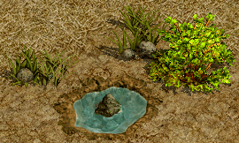 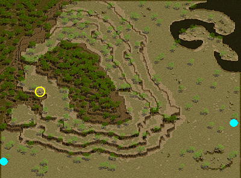 |
||||||
| グレートフォレスト/ 妖精達の蜘蛛の糸 | ヴィンスへ ヴィンスの発明品を所持していると限界突破称号クエストアップ確率が上昇。 ヴィンスの発明品は取引不可、銀行・ギルド倉庫保管不可、破壊のみ可。
|
||||||
[参考] Yotsuba Quest DataBase